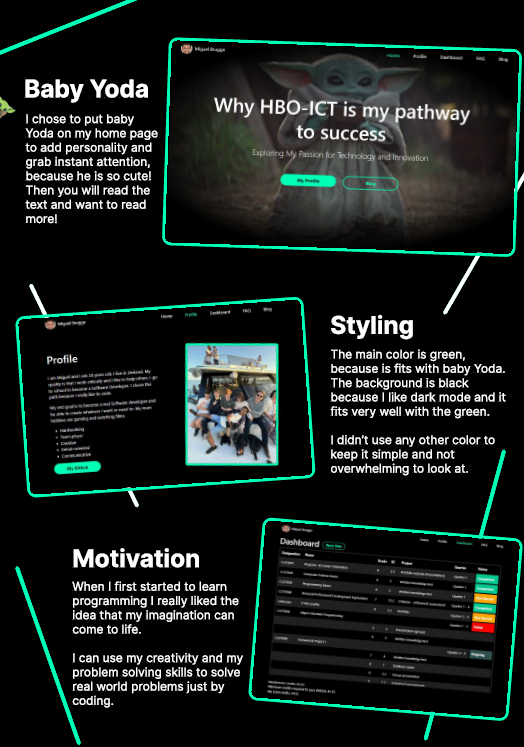

First Feedback
Recently, we had the opportunity to get feedback from several students and one of my teachers
about this website. I also had to create a poster to show off my motivation and the view of this
site.

Feedback
Front-End
- Make Baby Yoda scroll down: I've tried it but can't seem to figure it out, wich is no big problem as we both agreed that it would not really add extra value to the site.
- Ongoing status colour change: It first was more grey and so not really a good highlight colour so I agree that it had to been changed.
- Make the site less empty: I dissagreed with this one as my site it meant to be minimalistic and simple.
- Keep the navigation inside a blog-post: I agreed. People still want to be able to navigate through my site via a post.
Back-End
- More comments inside of HTML files: I do agree although most of my files are pretty clearly readable.